In production · targeting a 2026 Steam release
Unity 6 URP · Steam
Whoever Left The Light On
Design Lead
Puzzle Design
UI Design
Narrative Design
Unity 6 URP
A single-player escape-puzzle game set in a student bedroom, developed by a small micro-studio targeting 2026 Steam release. I am Design Team Lead, responsible for the game's entire design direction, puzzle architecture, UI asset production, and the coordination of design work across a cross-discipline team.
Overview
Whoever Left The Light On is a narrative escape-puzzle game built around a student bedroom environment. The game uses a hand-drawn graphic novel aesthetic with diegetic UI, meaning the interface is embedded in the world itself rather than sitting on top of it. The puzzle structure is built around three phases, each centred on a different object in the room.
I helped name the game, shaped its initial concept, and have been the primary design voice throughout production, working alongside a project director and a team spanning programming and art, with audio assets produced by external artist Sam Hall.
Full gameplay screenshots aren't shown here while the game is still in production, so as not to spoil the puzzles or story ahead of release. The UI and environment assets below are shown as they don't reveal narrative content.
In-Game Environment
The student bedroom in engine. The grayscale visual style preserves colour only on specific interactive objects using Unity URP Render Objects, distinguishing puzzle elements from the surrounding space without any UI prompts.
Design Leadership
- Authored the full Game Design Document, establishing the game's design standards, mechanics reference, narrative framework, and puzzle specifications
- Wrote individual puzzle design specifications for each team member: radio puzzle (Shannon), calendar puzzle (Kasper), toothbrush/teeth puzzle (Ahmet)
- Produced a narrative beat document mapping how the game's story is communicated through environmental details rather than dialogue
- Scoped the project from an initially larger vision down to a realistic, shippable build for the July 2026 window, making hard calls about what to cut without losing the game's identity
- Managed design task distribution across the team via Trello, acting as the final decision-maker on design direction alongside the project director
Puzzle Design
The game's puzzle architecture is built across three phases, each using a distinct interaction model while maintaining a coherent overall flow. The bedroom setting means every puzzle is motivated by the environment, nothing feels arbitrary because everything belongs to the room.
- Designed the overall three-phase structure to build in complexity, each phase introduces a new interaction type before the final phase combines them
- Designed a main menu pinboard system that extends the game's diegetic language into navigation itself, the menu is part of the world, not a layer on top of it
- Each puzzle spec was written to give the implementing team member enough direction to build confidently while leaving room for their own creative input
- Continuously reviewed puzzle implementations during production, providing feedback and adjustments to maintain consistent difficulty pacing
UI & Art Direction
The game's hand-drawn graphic novel aesthetic required UI work that felt made by hand rather than generated by software. I produced the complete icon set working in Clip Studio Paint, using brush settings and texture approaches to match the illustrative style of the rest of the game.
- Produced the full UI icon asset set for both diegetic in-world elements and the menu-facing interface
- Developed a working method in Clip Studio Paint to replicate a hand-drawn style consistently across assets, establishing brush and texture guidelines for the art team
- Contributed to decisions about how the UI language distinguishes the game visually from standard Unity defaults
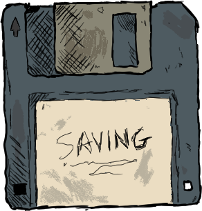
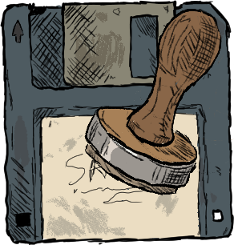
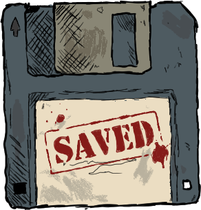
Save State Icons
Three states of the save system shown as a hand-drawn floppy disk. Saving shows the word being written, the stamp shows the act of saving mid-press, and Saved shows the completed stamp. Each state is a distinct frame rather than an abstract UI indicator.
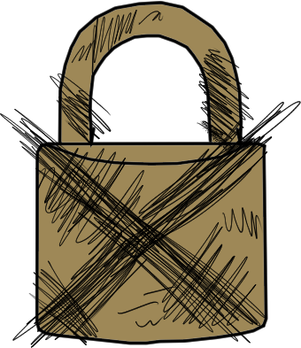
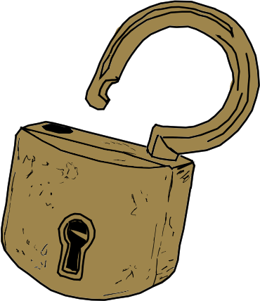
Lock State Icons
Locked and unlocked padlock states for puzzle progression. The locked version uses heavy cross-hatching to communicate restriction. The unlocked version opens the shackle to signal access. Both feel like physical objects rather than interface elements.
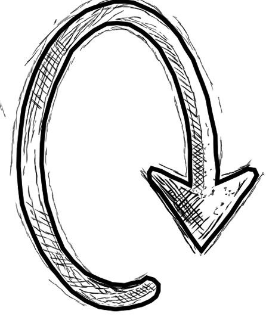
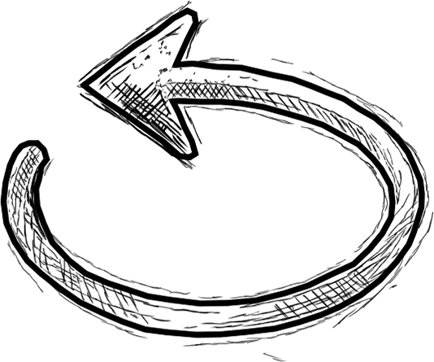
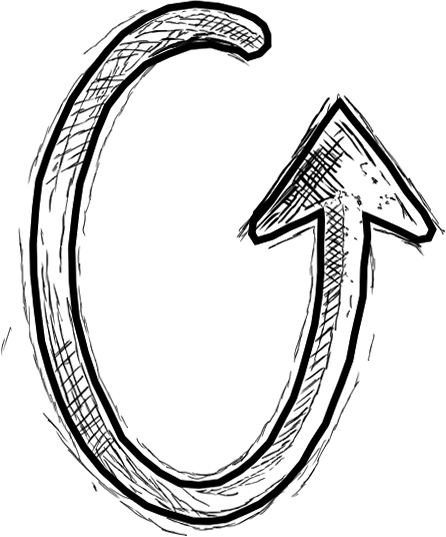
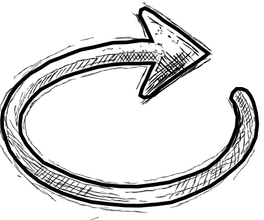
Rotation Direction Icons
Four directional rotation arrows for puzzle interaction prompts. Drawn as circular arrows with hand-sketched texture to match the overall hand-made aesthetic. Used to communicate rotation mechanics without text.
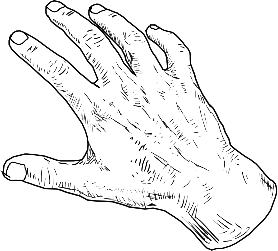
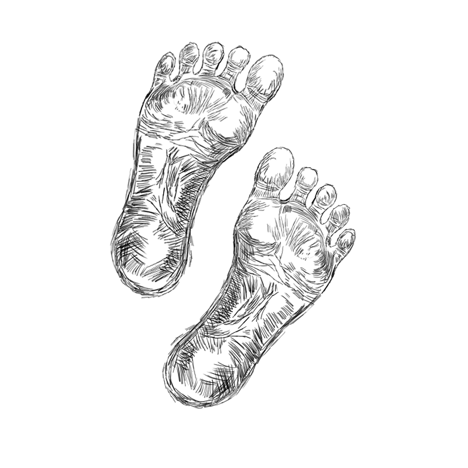
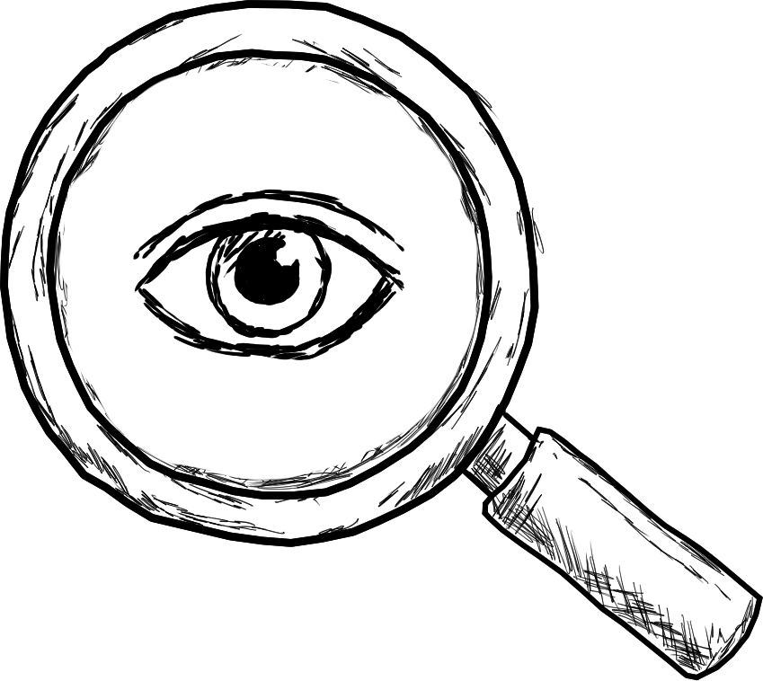
Interaction Prompt Icons
Diegetic interaction cues. The hand signals pick-up or interact, the feet signal movement or approach, and the magnifying glass with eye signals an inspect action. All drawn in the same sketchy crosshatch style to read as annotated rather than designed.
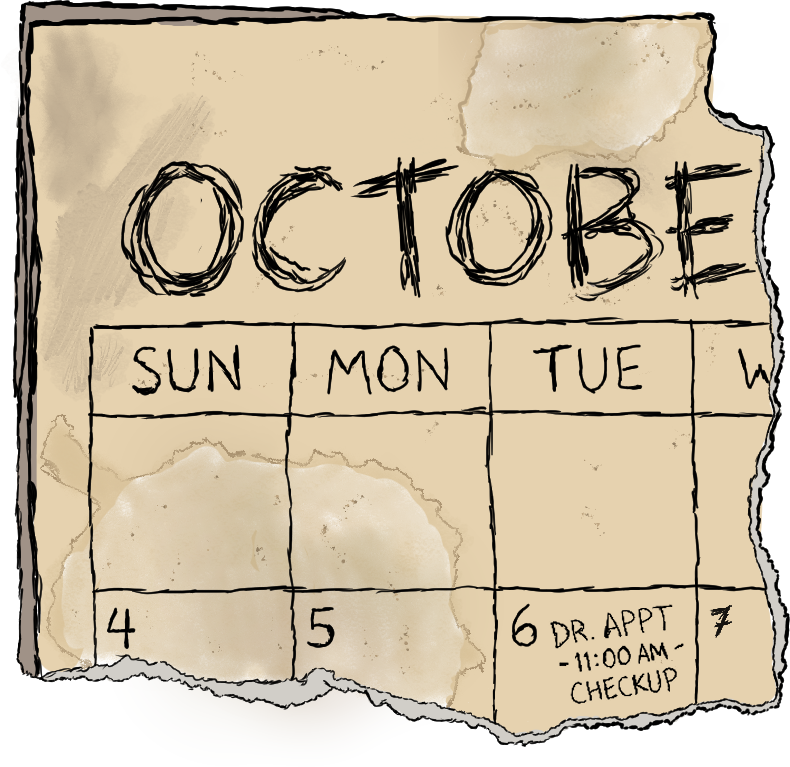
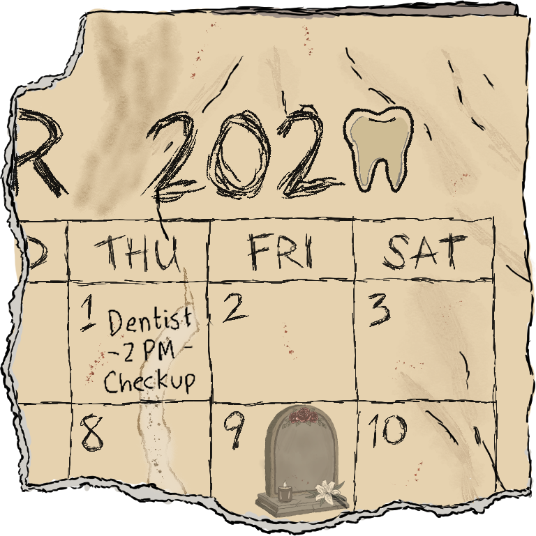
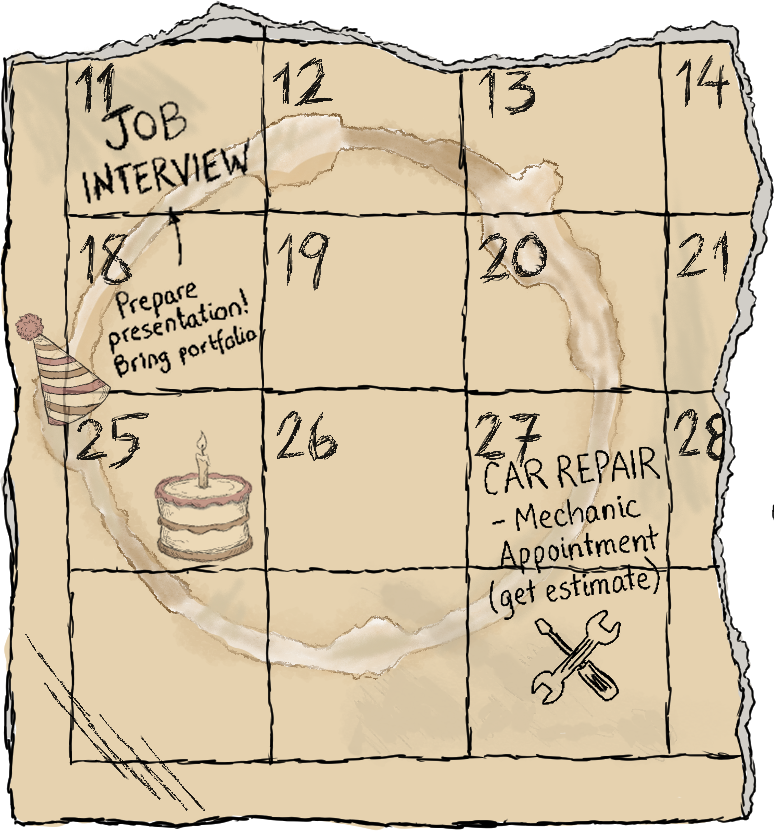
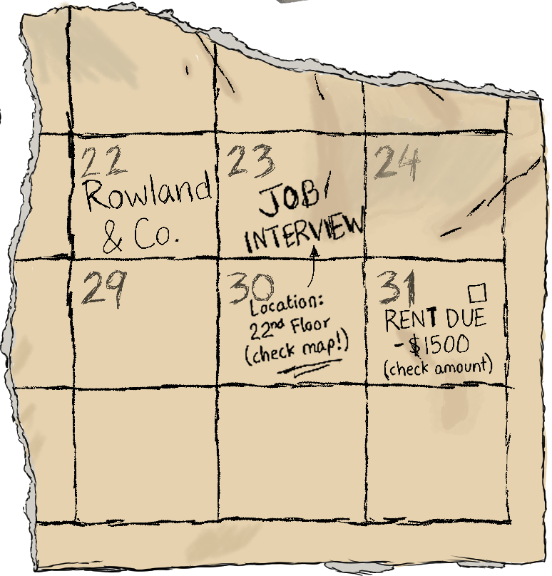
Calendar Puzzle Asset
The calendar is a four-piece puzzle asset that the player must physically assemble. Each quarter contains narrative clues embedded as appointments: a job interview, rent due, a car repair, a dentist visit. The coffee stains and torn edges make it feel found rather than designed.
Main Menu Pinboard
The main menu screen designed as a physical pinboard with pinned notes. The menu itself is a diegetic object in the game world rather than a traditional UI screen. The central paper carries the menu text with smaller notes pinned around it.